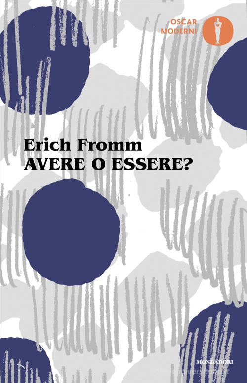

9:15 · 1 OPERA
Congratulazioni a quelli che non sono andati a votare.
Il filo del discorso
Il relatore apre con congratulazioni sarcastiche rivolte agli elettori e soprattutto a chi si è astenuto dalle amministrative. La tesi dell’intervento è che rinunciare al voto, finché la competizione elettorale esiste, favorisca chi dispone di seguaci organizzati e lasci maggiore spazio ai gruppi dominanti. La polemica investe anche quanti continuano a sostenere i partiti che l’oratore considera responsabili delle restrizioni e della paura diffuse dal 2020.
Leggi la sintesi completaRiduci la sintesi
Il discorso interpreta la democrazia come un problema su due versanti: per le oligarchie che, secondo il relatore, vorrebbero ridurre la partecipazione; per i cittadini che trascurano uno strumento di scelta ma dedicano attenzione alla comunicazione quotidiana e ai consumi. Il richiamo ad Avere o essere? di Erich Fromm collega questa critica al primato del possesso nella costruzione dell’identità. Nella parte finale il relatore condanna l’indifferenza verso le limitazioni subite dagli altri e descrive l’astensione come una rinuncia alla propria voce. Le definizioni di oligarchia criminale, regime e progetto totalitario appartengono al suo linguaggio polemico: la scheda ne restituisce la posizione, senza accertare l’esistenza di un piano coordinato o trasformare giudizi su elettori e istituzioni in diagnosi o fatti.
I libri nel discorso

Avere o essere?
Note sul riferimento
Copertina: Immagine dell’edizione Mondadori, 17 gennaio 2025, 252 pagine, traduzione di Francesco Saba Sardi. La grafica riporta Oscar Moderni. Originale To Have or to Be?, 1976.
Copertina autentica con cerchi blu, forme grigie, autore e titolo neri, marchio Oscar Moderni arancio e Mondadori. Il catalogo commerciale usa anche la denominazione Sophia: si descrive il marchio effettivamente visibile senza sostituirlo con una collana dedotta. Nessuna edizione particolare è certificata nel video.
Il titolo e il nome di Fromm sono riconoscibili nel passaggio sul possesso e sull’identità; trascrizione automatica con errori fonetici.